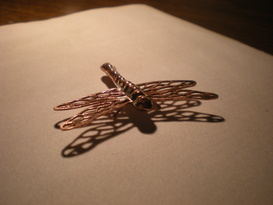
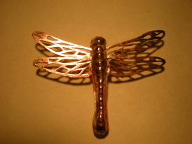
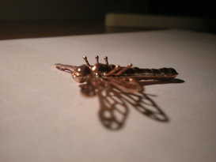

Bitmaps and Brickbats
Master Builder 3D render

I am a huge fan of the Thief series of video games. The third game in the series, called Thief 3: Deadly Shadows, had some gorgeous 3D-rendered cutscenes in between the levels. Upon spotting a most beautiful relief model of the Master Builder in one of them, I knew that I needed that 3D-printed or CNC-milled on my desk. So I went about extracting a screenshot and converting the color values into a height-displacement map on a 2D plane using Blender’s embossing feature. Then I went a little overboard for a couple of weeks, researching seamless noise loops and Voronoi textured transparency maps, and ended up creating these 10-second seasonal snippets. The other variations are: Snow, Rain, Rain (alternate), Canopy
{kind=link}
{kind=link}
{kind=link}
{kind=link}
Higher resolution, 30 frames per second renders can be found on this youtube playlist. Feel free to use in any projects. The folks at r/Thief seemed to like ’em.
OMQ logo design
I made this as part of a logo design contest for the Oregon Center for Optical, Molecular & Quantum Science (OMQ), which was formerly known as the Oregon Center for Optics (OCO). I tried spelling the letters O, M, and Q using shapes of temporal and spatial modes. A cutsie interference fringe pattern broke the O into a Q. The winning logo is basically a re-submission of the old OCO logo, which is an excellent design.
Novena banner
I made this as part of a banner design contest for the Novena Open Hardware laptop crowdfunding campaign. It was created in Inkscape. Vector SVG file also available.
{kind=link}
Solvay O
This was made as part of a Department T-shirt design contest here at the University of Oregon. The original image is from the Solvay Physics conference held in 1927. I photographed my own hands making the Ducks O sign with various variations & shears, and superimposed them on each of the scientists. Masking the transition was a bit hard. I had to erase some legitimate hands and fix Max Planck’s hat with some plastic surgery. Posterising via GIMP to reduce the number of colors to 3 and tracing the bitmap via Inkscape made the image T-shirt print ready.
Copper Dragonfly
|  |  |  |
{kind=link}
{kind=link}
{kind=link}
On a whim, a couple of fellow grad students and I got ourselves enrolled into a fine metal works class at the Craft Center here at the UofO (under Margerita O’Brien Sensei). I planned to make a tiny dragonfly out of sterling silver, and decided to make a copper draft first to get used to the process. Almost the whole dragonfly started out has a single copper sheet. The wings were cut using a tiny dill bit and a fret saw. The upper and lower bodies were beaten into copper sheets using chasing and repousse techniques (including bulges and ridges). The legs were just copper wire with the ends heated in a blow-torch flame until surface tension caused the molten end to ball up. Silver-solder the whole thing together, then tumble, then work harden. Presto. The silver one will have a blue Sapphire mounted on its back, and a silver chain coming off of the wings.
Saras Rorschach
This was for my undergrad hostel (dorm?) T-shirt from 2008. The hostel is named Saraswathi (all hostels were named after rivers). Saraswathi is also the Hindu goddess of knowledge and intellectual pursuits. She is often depicted holding a Veena, which is an Indian string instrument with dual resonance chambers. The goddess logo was designed by Mickey (we all had nicknames at IITM).